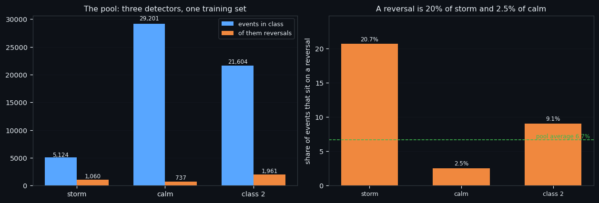
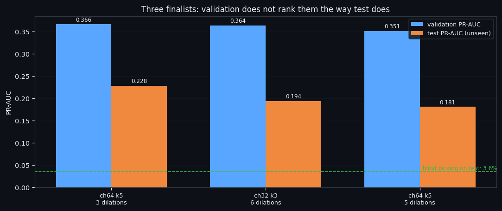
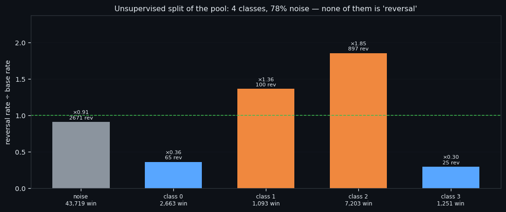
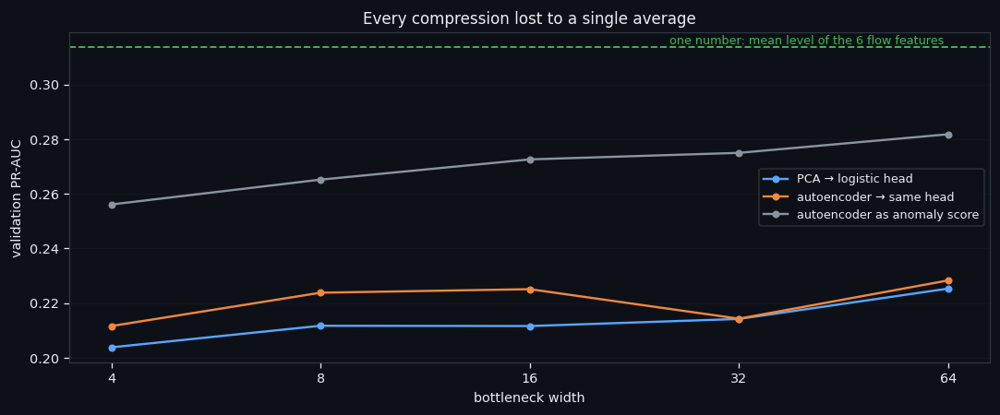

One Network for Three Market States: What a Pooled Reversal Model Learns
We trained one network on the events of three different market states at once — 55,929 events, 3,758 of which sit on a real turning point — and asked it a single question: is this event a reversal or an ordinary event of its own class? The answer is interesting in a way we did not plan: the model works, the validation set lies about which model is best, and an unsupervised split of the same pool finds classes that have nothing to do with reversals at all.
Full walkthrough — streamed from YouTube.
① One pool, three states, one subtraction
Three detectors mark events in our data: storm (loud order book), calm (quiet), class 2 (the middle). Until now each had its own model. Here they share one, and the trick that makes that possible is subtraction: before an event goes into the network, we subtract from it the **average event of its own class over the past 30 days*. The network never sees "a loud event" or "a quiet event" — it sees how much this event differs from what its class normally looks like*.
The base is strictly causal: for an event at time t it is built from events strictly before t, and validation and test events are excluded from it entirely. Otherwise the base would be quietly looking at its own answer.
| class | events in the pool | of them on a reversal | share | |---|---|---|---| | storm | 5,124 | 1,060 | 20.7% | | calm | 29,201 | 737 | 2.5% | | class 2 | 21,604 | 1,961 | 9.1% |
Read the last column, not the middle one. A reversal is one event in five inside a storm and one in forty inside calm — the same phenomenon is common in one state and rare in another, which is exactly why a single model trained on the union has to be told which state each event came from. Subtracting the class base is how we tell it.
Everything in this series feeds one goal: an automated trading bot that reads the order book instead of the price. This step is the plumbing for that: one model instead of three is one thing to maintain, retrain and monitor when it eventually runs live.

② The model works. The validation set lies.
The split is blocked in time: the timeline is cut into 50 chunks, five go to validation and five to test, every other one, with a 30-minute embargo around each. Then 18 architectures are screened, the best three are trained to 48 epochs, and the answers are read at 11 checkpoints inside the run.
| model chosen by validation | validation PR-AUC | test PR-AUC | precision on test | |---|---|---|---| | ch64, kernel 5, 3 dilations | 0.3661 | 0.2284 | 26.0% | | best on test instead | 0.3661 | 0.2284 | 26.0% |
Against blind picking on the test period (3.6%) that is a real signal — roughly 7.3 times better than chance.
And here is the uncomfortable part. Validation does not rank the models. Among the three finalists the ordering on test is close to the reverse of the ordering on validation. The reason is visible in the numbers: the test chunks landed on a quiet stretch of the market with 3.6% reversals, while validation had 13.8%. With 200 reversals in the test set, PR-AUC is too noisy to choose an architecture with.
We are reporting this rather than quietly picking the best number, because a bot built on "the architecture that won validation" would be built on a coin flip. Everything in this series feeds one goal: an automated trading bot that reads the order book instead of the price. A model we cannot rank honestly is a model we cannot deploy.

③ What the pool splits into on its own
Now the same pool, but without any labels at all: PCA → UMAP → HDBSCAN, and our reversal marks applied only afterwards, as a check.
The split is real — stability 0.813 on a full rebuild with a different seed, against 0.378 for a hard null where the cells are shuffled between events. But it is not about reversals (ARI 0.026) and not about our three classes (ARI 0.038). It cuts the pool along something else entirely: the level of the flows.
| class | events | reversals inside | versus the pool average | |---|---|---|---| | noise | 43,719 | 6.1% | ×0.91 | | class 0 | 2,663 | 2.4% | ×0.36 | | class 1 | 1,093 | 9.2% | ×1.36 | | class 2 | 7,203 | 12.4% | ×1.85 | | class 3 | 1,251 | 2.0% | ×0.30 |
The most reversal-rich class carries them at ×1.85 the base rate, the wall-shaped ones at a third of it. So reversals are shifted by the structure of the book, never isolated by it — the fourth time this series arrives at that sentence by a different road.
Everything in this series feeds one goal: an automated trading bot that reads the order book instead of the price. A shift of ×1.85 is not a trade on its own, but it is a filter: it tells a bot which events are worth spending a second signal on.

④ Every compression lost to one average
Last question of this study: does the event need to be compressed before the model sees it? We ran PCA and an autoencoder at five bottleneck widths, with the same logistic head on top of both, so that what is compared is the compression and not the head.
| what we compressed with | best width | validation PR-AUC | test PR-AUC | |---|---|---|---| | PCA | 64 | 0.2253 | 0.0685 | | autoencoder | 64 | 0.2283 | 0.0713 | | autoencoder as an anomaly score | 64 | 0.2818 | 0.0891 | | one number: the mean level of the six flow features | — | 0.3137 | 0.1156 |
Both compressions lost to a single average, and the full network on all 1,680 numbers beat every bottleneck by a factor of two. The autoencoder as an anomaly detector — trained only on non-reversals, scored by reconstruction error — was the weakest of the three, and that is a finding rather than a failure: a reversal is not anomalous for a model that has learned ordinary events. It reconstructs just fine. It is simply louder.
What is next. The following studies stop asking the model to be clever and start asking the data to be clean: what the whole dataset splits into when nobody tells it what to look for, how that split behaves in the rising and the falling half of a move, whether it reproduces week by week — and finally how to throw away the part of the data that carries no reversals at all. Everything in this series feeds one goal: an automated trading bot that reads the order book instead of the price. Every one of those steps is about giving that bot fewer, better events to look at.

If this changed how you read the tape, the natural next step is One Axis, Again: Clustering 56,000 Order-Book Windows Without a Teacher —
One Axis, Again: Clustering 56,000 Order-Book Windows Without a Teacher
The Rising Half of a Move: What the Order Book Looks Like Between a Bottom and a Top
Volume Is the Fuel — Not the Steering Wheel
We recorded the Binance order book every second for six coins over five months and ran eighteen tests on what volume really does.
About Market Research Lab — What We Collect and Why
Most market commentary is storytelling.
Comments
Discussion is powered by GitHub. Enable it by adding secrets/giscus.json (repo IDs from giscus.app).